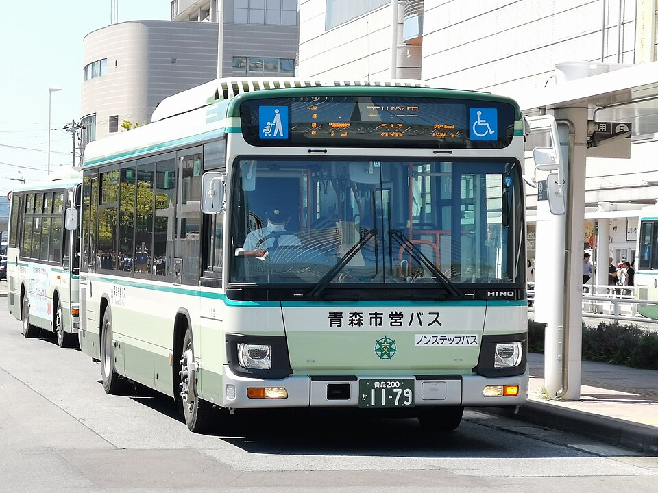
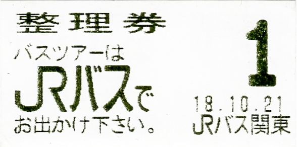
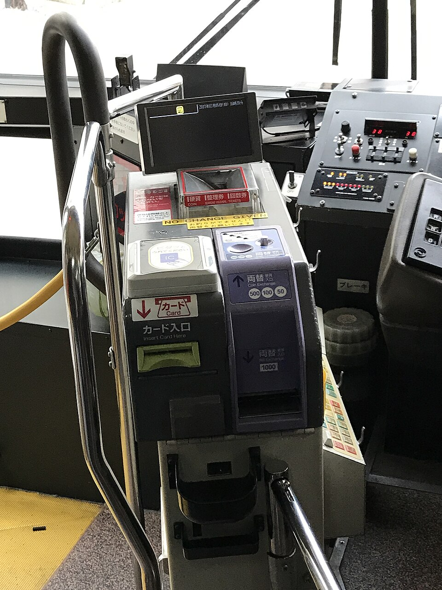

2026.10.01 – 10.04 · 아오모리
아오모리에 지하철은 없다. 이번 일정에 JR 열차를 타는 구간도 없다. 전부 버스 셋과 도보다. 그리고 일본 지방 버스는 한국과 반대로 뒤로 타서 앞으로 내린다. 이 한 가지만 알면 나머지는 따라온다.
← 동선 · 일정으로| 언제 | 무엇 | 구간 | 내는 법 |
|---|---|---|---|
| 1일차 | 空港連絡バス 공항버스 | 공항 → 아오모리역 | 아래 2번 |
| 1일차 | 青森市営バス 시영버스 | 아오모리역 → 산나이마루야마 | 아래 1번. 이게 기본형이다 |
| 2일차 | みずうみ号 미즈우미호 | 아오모리역 ↔ 핫코다 · 스카유 | 아래 3번 |
| 3일차 | 없음. 전 구간 도보 | 역에서 12분 안 | — |
| 4일차 | 空港連絡バス 공항버스 | 아오모리역 → 공항 | 아래 2번 |
거리에 따라 요금이 오르는 방식이라(対キロ区間制) 어디서 탔는지를 버스가 알아야 한다. 그걸 증명하는 종이가 整理券(세이리켄, 정리권)이다. IC카드를 쓰면 카드가 대신 기억하므로 종이가 필요 없다.



IC카드를 쓰면 위의 절반이 사라진다. 整理券도, 환전기도 필요 없다.
탈 때 중앙문 리더에 터치 → 내릴 때 운임함 위 리더에 터치. 요금은 알아서 빠진다. 각각 "삑" 소리가 나면 된 것이다.
쓸 수 있는 카드: Suica · PASMO · Kitaca · TOICA · manaca · PiTaPa · ICOCA · nimoca · はやかけん · SUGOCA, 그리고 모바일 Suica · 모바일 PASMO. 잔액이 모자라면 그 자리에서 현금으로 채울 수 있다.
아이폰에 모바일 Suica 를 깔아 가면 이 노선은 현금이 아예 필요 없다. 현금 35,000엔은 산간 시설과 시장용으로 남겨 둔다.
운행사는 JRバス東北(JR버스 도호쿠)다. 공항과 아오모리역을 약 35분에 잇는다. 예약은 없고 줄을 서서 탄다.
도착 11:35 → 입국심사·수하물 → 버스승강장. 종점이 青森駅前이라 숙소 도보권에 그대로 내린다.
아오모리역 09:50 경 출발 → 공항 10:45 경. 이 버스를 놓치면 12:45 비행기가 위험하다. 조식을 7:30~9:00 으로 잡은 이유다.
지불 방법이 출처마다 갈린다. 둘 다 준비해 간다.
요금 750엔은 여러 곳이 일치한다. 그런데 "현금과 IC카드 둘 다 된다"는 기록과 "현금 불가, IC·터치결제만"이라는 기록이 같이 있다. IC카드와 750엔 현금을 둘 다 가지고 있으면 어느 쪽이어도 탄다.
아오모리공항 공식 사이트는 도메인 전체가 403 이라 원문 확인이 안 됐다. 출발 전에 브라우저로 한 번 열어 볼 것.
아오모리역과 핫코다·스카유를 잇는 JRバス東北의 노선이다. 2일차는 이 버스 없이는 성립하지 않는다. 아오모리역 11번 승강장에서 탄다.
예약은 필요 없다. 단 선착순이다.
JR버스 도호쿠 공식이 "아오모리~스카유 라인"에 예약을 요구하는데, 괄호에 八甲田号(하코다호)라고 적혀 있다. 그건 11/12~3/31 겨울 노선이다. 우리 2일차 10/2 는 みずうみ号(미즈우미호, 9/18~11/17) 기간이고, 미즈우미호도 핫코다 로프웨이역과 스카유온천을 경유한다.
예약이 없다는 건 앉을 자리가 보장되지 않는다는 뜻이다. 첫 편에 맞춰 일찍 줄을 선다. 참고로 예약이 필요한 노선도 전화 예약은 받지 않는다 — 공식 사이트의 WILLER 배너로만 된다. 0570-000448 은 문의 전용이다.
한국은 앞으로 타고 뒤로 내린다. 일본 지방 버스는 반대다. 앞문 앞에 서 있으면 기사가 손짓으로 뒤를 가리킨다.
운임함은 거스름돈을 안 준다. 1,000엔 지폐와 동전을 들고 탄다.
시발점부터 탄 것으로 계산돼 더 낸다. 내릴 때 말하면 조정해 주지만 일본어가 필요하다. 그냥 뽑는 게 빠르다.
안 누르면 안 선다. 다음 정류장 안내 방송이 나오면 그때 누른다.
역에 줄이 둘이다. 왼쪽이 티켓, 오른쪽이 탑승. 티켓이 먼저다. 키오스크가 없고 직원 2명이 판다. 하산하므로 편도권으로 되는지 매표에서 확인한다.
버스 안에서는 충전이 안 된다. 편의점이나 역에서 미리 채운다. 모바일 Suica 는 앱에서 바로 된다.
Aomori City Bus 1179.jpg — Animataru / CC BY-SA 4.0 · JRバス関東 整理券 1番.png — Japanbird / CC BY-SA 4.0 · バス運賃箱 2017 (33139447731).jpg — bangdoll from Taipei,Taiwan / CC BY-SA 2.0
전부 위키미디어 커먼즈. 정리권과 운임함은 다른 지역 버스의 것이지만 형태와 사용법은 같다. 아오모리 시영버스 실차만 아오모리 것이다.